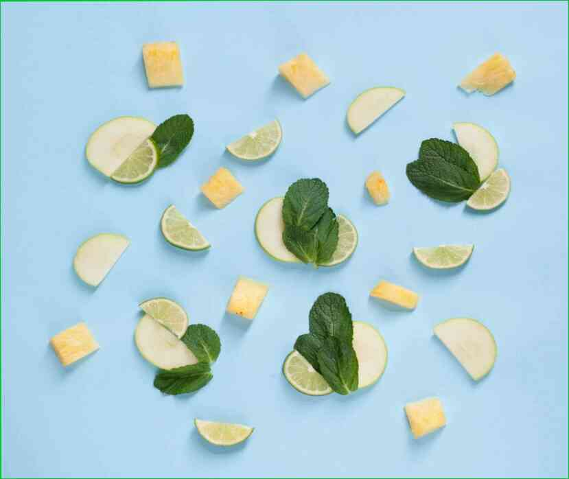

29.03.2021
Sane abitudini che aiutano a mantenere il peso dopo la perdita di peso Quando riusciamo a sopravvivere su una dieta per la perdita di peso e, infine, perdere quei chili in più, la cosa più difficile arriva-per consolidare il risultato e tenerlo più a lungo. Mantenimento del peso è una grande sfida che molte persone non in grado di gestire. Si commettono errori e tutti gli sforzi per perdere peso, andare giù per lo scarico.Allo stesso tempo, ci sono quelli che in qualche modo riescono a mantenere una figura snella dopo una dieta e mantenere un peso equilibrato per un lungo periodo di tempo. Come faccio a fare? Quali abitudini di persone che riescono a mantenere il loro peso dopo la perdita di peso?Non andare agli estremi.Tutto o niente - questo è un approccio radicale per molti la perdita di peso. A causa della loro esperienza amara, e l'incapacità di mantenere il peso, credo che sia meglio seguire questo principio sbagliato.Fra i venti e i vostri anni cinquanta, si può quasi sentire il clack di monete sotto la porta. Questo perché il corpo non è semplicemente progettato per fare questo tipo di lavoro. Se avete il coraggio di pensare fuori della scatola, si dovrà affrontare il rifiuto e il ridicolo. In tali casi, si dovrebbe pensare due volte prima di decidere di seguire questo principio cattivo.Se si:scegliere di non includono prodotti a base di proteine nella vostra dieta;supplementare alimenti con un alto indice glicemico, non sono inclusi nella vostra dieta;a volte aggiungere al mix di bevande alcoliche e di una grande quantità di grassi;durante il giorno si lavora duro, ma allo stesso tempo, fare attenzione a non sollevare pesi o andare in palestra.5 cibi migliori per la normalizzazione di zucchero nel sangue.Si allenano regolarmente.Una regolare attività fisica è importante per il corpo e, in particolare, per il processo di combustione dei grassi. Esercizio ha un effetto positivo sul metabolismo e la salute generale del corpo. Contribuisce al buon funzionamento dell'intero organismo.Il cerchio è un super macchina di esercizio per i più pigri. Anche per chi è in sovrappeso. In bicicletta è un ottimo modo per esercitare non solo in palestra, ma anche in campo, per strada, in auto, in campo, per strada, al telefono, in campo, e di più. È molto utile avere una opzione di trasporto. Questo articolo è solo per scopi informativi. Si prega di consultare il proprio medico prima di utilizzare queste informazioni.Se ti è piaciuto il nostro articolo, saremo felici se vorrai condividere sul vostro social media pagine.